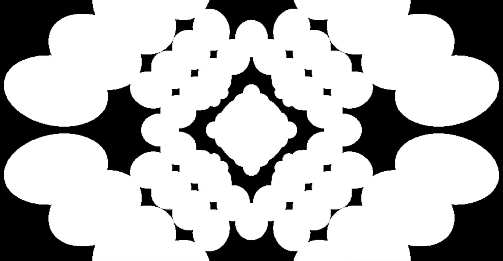
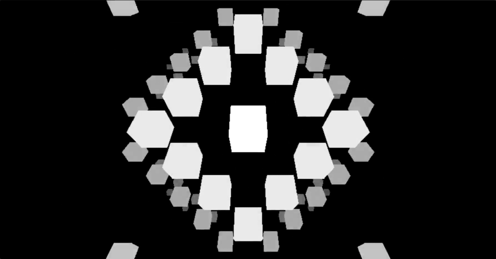
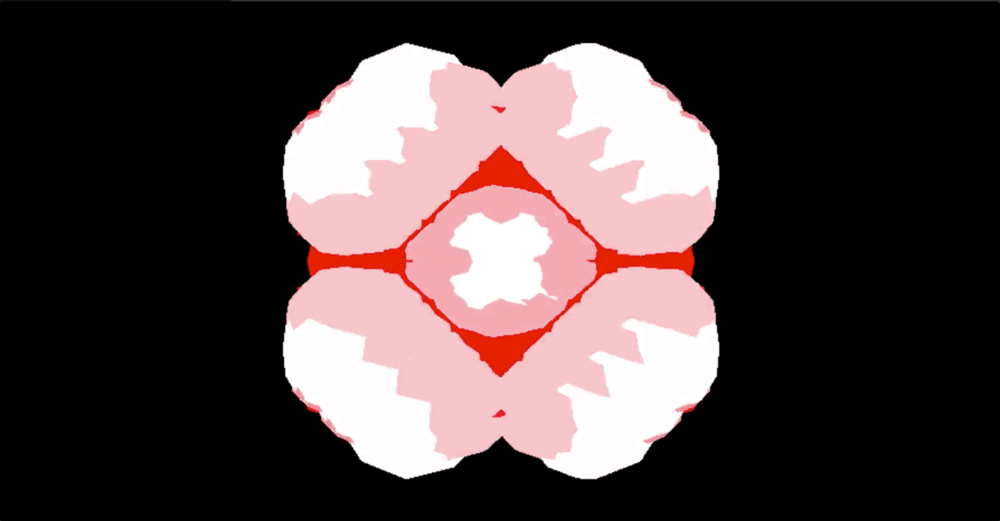

visual
Built to streamline my process of creating generative art while maintaining the ability of producing near infinite visual variations.

Designed + developed with an emphasis on three js and generative art in 2019.


